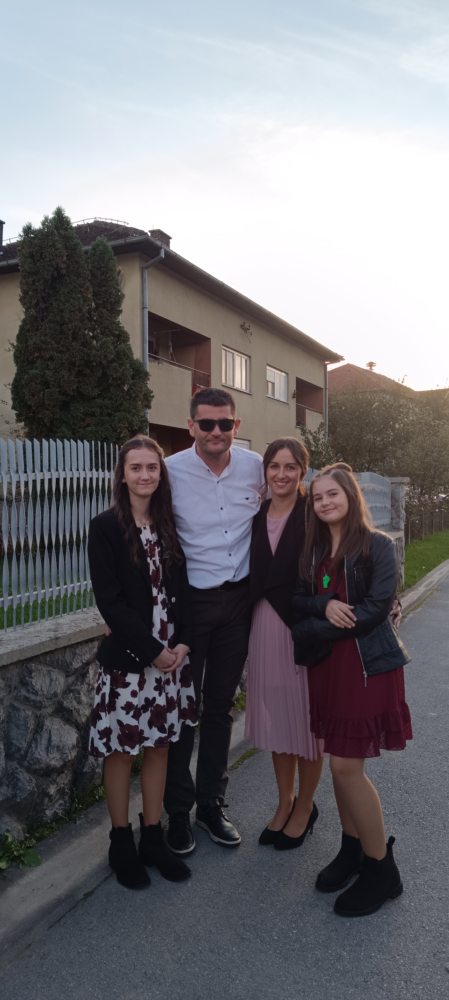
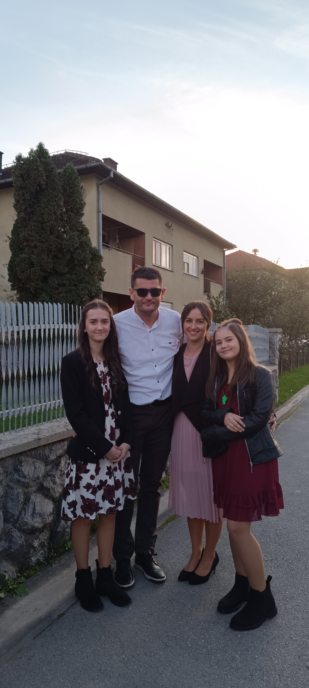

U slobodnom vrijeme najviše me vesele mažoretkinje, jer kroz ples i ritam mogu izraziti svoju energiju, kreativnost i timski duh.
Treninzi me uče disciplini, upornosti i samopouzdanju, a nastupi su uvijek posebno iskustvo puno pozitivne energije i druženja.
Osim plesa, jako volim prirodu. Šetnje, boravak na svežem zraku i promatranje prirodnih ljepota pomažu mi da se opustim
i napunim energijom. Priroda me inspirira i podsjeća koliko je važno čuvati naš planet. Veliku ljubav imam prema životinjama,
one me uče brizi, nježnosti i odgovornosti. Vrijeme provedeno sa životinjama uvijek me razveseli i uljepša dan.
Još jedna od omiljenih stvari je provođenje slobodnog vremena sa svojom obitelji. Obitelj mi pruža podršku i ljubav koja mi je
najvažnija u životu. Sve u svemu, moji hobiji su raznoliki i ispunjavaju moj život srećom.
Uživam u svakom trenutku slobodnog vremena.
 
